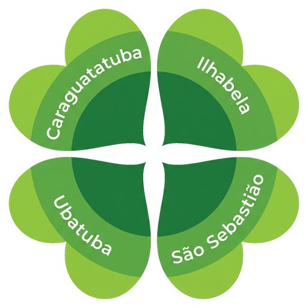
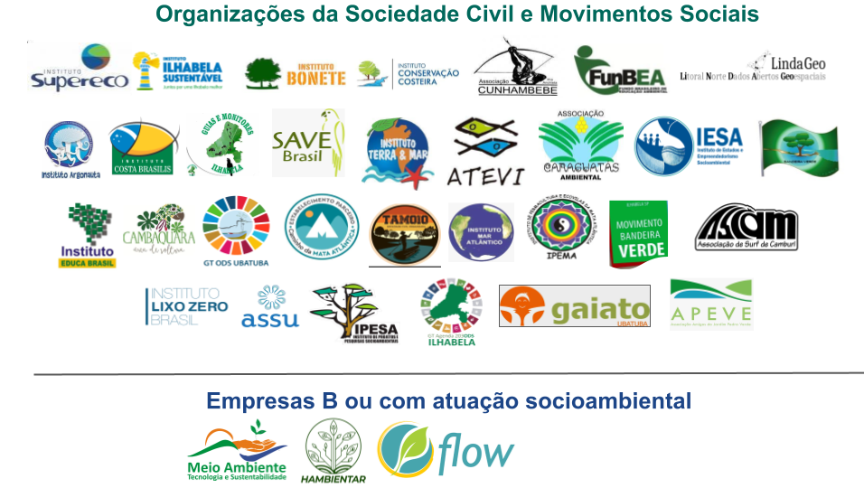

Caraguatatuba
- Roque Alves Pereiraassociacaocaraguatas@gmail.com
- Eduardo Leduc
Início / A Rede
Quem somosA Rede Litoral Norte Sustentável é uma rede social de comunicação formada pelo coletivo de Organizações da Sociedade Civil (OSCs), movimentos sociais, iniciativas cidadãs e cidadãos interessados, sem personalidade jurídica.
Nossa missão é mobilizar e articular esforços mútuos em prol do desenvolvimento sustentável do Litoral Norte do estado de São Paulo, atuando como um fórum de construção de um Diálogo Socioambiental de participação aberta, horizontal e democrática.

O Diálogo Socioambiental é um fórum virtual mantido pela Rede e composto pelos principais atores da região, com o objetivo de trazer à luz da discussão os principais desafios existentes no Litoral Norte.
Organizações da sociedade civil, movimentos sociais e empresas B ou com atuação socioambiental.

A adesão é aberta a organizações da sociedade civil, movimentos sociais, iniciativas cidadãs e cidadãos interessados no desenvolvimento sustentável do Litoral Norte.